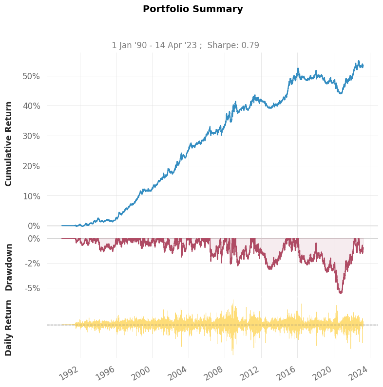
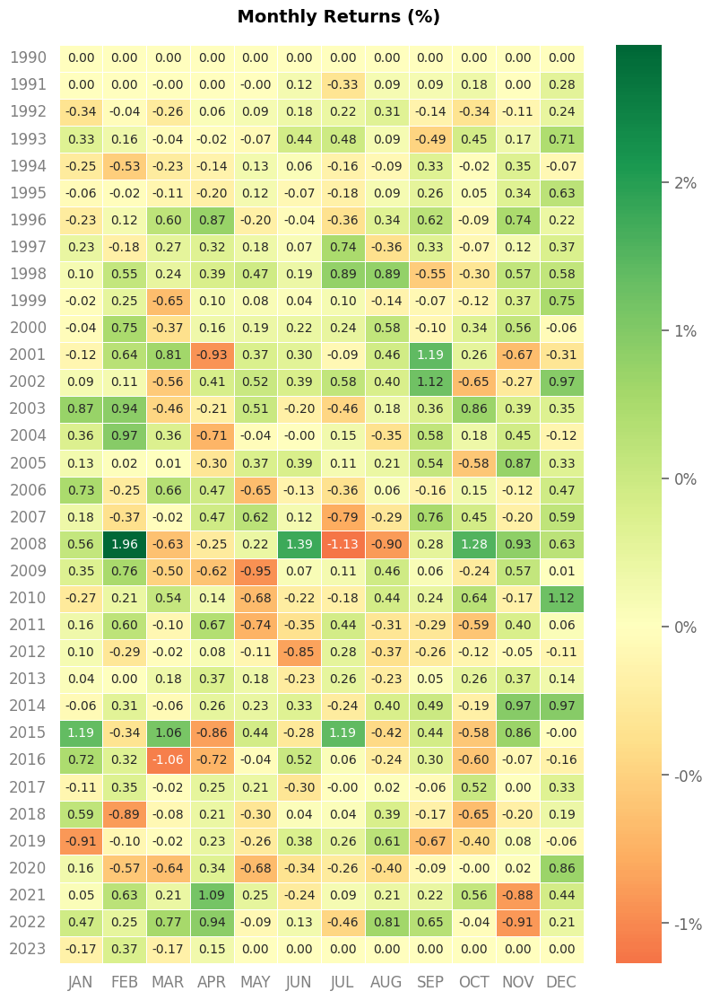

Experiment 3#
import pandas as pd
import quantstats as qs
from tinycta.portfolio import build_portfolio
# Load prices
prices = pd.read_csv("data/p_hashed.csv", index_col=0, parse_dates=True).ffill().truncate(before="1970-01-01")
---------------------------------------------------------------------------
ValueError Traceback (most recent call last)
/tmp/ipykernel_2424/3532311700.py in ?()
1 # Load prices
----> 2 prices = pd.read_csv("data/p_hashed.csv", index_col=0, parse_dates=True).ffill().truncate(before="1970-01-01")
/opt/hostedtoolcache/Python/3.10.11/x64/lib/python3.10/site-packages/pandas/core/generic.py in ?(self, before, after, axis, copy)
10427
10428 # GH 17935
10429 # Check that index is sorted
10430 if not ax.is_monotonic_increasing and not ax.is_monotonic_decreasing:
> 10431 raise ValueError("truncate requires a sorted index")
10432
10433 # if we have a date index, convert to dates, otherwise
10434 # treat like a slice
ValueError: truncate requires a sorted index
We use the system: $\(\mathrm{CashPosition}=\frac{f(\mathrm{Price})}{\mathrm{Volatility(Returns)}}\)$
This is very problematic:
Prices may live on very different scales, hence trying to find a more universal function \(f\) is almost impossible. The sign-function was a good choice as the results don’t depend on the scale of the argument.
Price may come with all sorts of spikes/outliers/problems.
We need a simple price filter process
We compute volatility-adjusted returns, filter them and compute prices from those returns.
Don’t call it Winsorizing in Switzerland. We apply Huber functions.
def filter(price, volatility=32,clip=4.2, min_periods=300):
r = np.log(price).diff()
vola = r.ewm(com=volatility, min_periods=min_periods).std()
price_adj = (r/vola).clip(-clip, clip).cumsum()
return price_adj
Oscillators#
All prices are now following a standard arithmetic Brownian motion with std \(1\).
What we want is the difference of two moving means (exponentially weighted) to have a constant std regardless of the two lengths.
An oscillator is the scaled difference of two moving averages.
import numpy as np
def osc(prices, fast=32, slow=96, scaling=True):
diff = prices.ewm(com=fast-1).mean() - prices.ewm(com=slow-1).mean()
if scaling:
s = diff.std()
else:
s = 1
return diff/s
from numpy.random import randn
import pandas as pd
price = pd.Series(data=randn(100000)).cumsum()
o = osc(price, 40, 200, scaling=True)
print("The std for the oscillator (Should be close to 1.0):")
print(np.std(o))
The std for the oscillator (Should be close to 1.0):
0.9999949999875
#from pycta.signal import osc
# take two moving averages and apply tanh
def f(price, slow=96, fast=32, vola=96, clip=3):
# construct a fake-price, those fake-prices have homescedastic returns
price_adj = filter(price, volatility=vola, clip=clip)
# compute mu
mu = np.tanh(osc(price_adj, fast=fast, slow=slow))
return mu/price.pct_change().ewm(com=slow, min_periods=300).std()
from ipywidgets import Label, HBox, VBox, IntSlider, FloatSlider
fast = IntSlider(min=4, max=192, step=4, value=32)
slow = IntSlider(min=4, max=192, step=4, value=96)
vola = IntSlider(min=4, max=192, step=4, value=32)
winsor = FloatSlider(min=1.0, max=6.0, step=0.1, value=4.2)
left_box = VBox([Label("Fast Moving Average"), Label("Slow Moving Average"), Label("Volatility"), Label("Winsorizing")])
right_box = VBox([fast, slow, vola, winsor])
HBox([left_box, right_box])
portfolio = build_portfolio(prices=prices, position=prices.apply(f, slow=slow.value, fast=fast.value, vola=vola.value, clip=winsor.value))
/home/thomas/.pyenv/versions/3.10.10/lib/python3.10/site-packages/pandas/core/arraylike.py:402: RuntimeWarning: invalid value encountered in log
result = getattr(ufunc, method)(*inputs, **kwargs)
qs.reports.basic(portfolio.returns(init_capital=10000))
Performance Metrics
Strategy
------------------ ----------
Start Period 1990-01-02
End Period 2023-04-14
Risk-Free Rate 0.0%
Time in Market 96.0%
Cumulative Return 53.55%
CAGR﹪ 1.3%
Sharpe 0.79
Prob. Sharpe Ratio 100.0%
Sortino 1.12
Sortino/√2 0.79
Omega 1.16
Max Drawdown -5.58%
Longest DD Days 2275
Gain/Pain Ratio 0.16
Gain/Pain (1M) 0.91
Payoff Ratio 0.96
Profit Factor 1.16
Common Sense Ratio 1.17
CPC Index 0.61
Tail Ratio 1.01
Outlier Win Ratio 4.01
Outlier Loss Ratio 4.03
MTD 0.15%
3M 0.29%
6M -0.8%
YTD 0.17%
1Y 0.8%
3Y (ann.) 1.57%
5Y (ann.) 0.46%
10Y (ann.) 0.94%
All-time (ann.) 1.3%
Avg. Drawdown -0.33%
Avg. Drawdown Days 43
Recovery Factor 9.59
Ulcer Index 0.02
Serenity Index 1.17
Strategy Visualization
findfont: Font family 'Arial' not found.
findfont: Font family 'Arial' not found.
findfont: Font family 'Arial' not found.
findfont: Font family 'Arial' not found.
findfont: Font family 'Arial' not found.
findfont: Font family 'Arial' not found.
findfont: Font family 'Arial' not found.
findfont: Font family 'Arial' not found.
findfont: Font family 'Arial' not found.
findfont: Font family 'Arial' not found.
findfont: Font family 'Arial' not found.
findfont: Font family 'Arial' not found.
findfont: Font family 'Arial' not found.
findfont: Font family 'Arial' not found.
findfont: Font family 'Arial' not found.
findfont: Font family 'Arial' not found.

/home/thomas/.pyenv/versions/3.10.10/lib/python3.10/site-packages/quantstats/stats.py:968: FutureWarning: In a future version of pandas all arguments of DataFrame.pivot will be keyword-only.
returns = returns.pivot('Year', 'Month', 'Returns').fillna(0)
findfont: Font family 'Arial' not found.
findfont: Font family 'Arial' not found.
findfont: Font family 'Arial' not found.
findfont: Font family 'Arial' not found.
findfont: Font family 'Arial' not found.
findfont: Font family 'Arial' not found.
findfont: Font family 'Arial' not found.
findfont: Font family 'Arial' not found.

This system is still univariate and lacks integrated risk management:
Some hedge funds stop here. All energy goes into constructing \(\mu\).
Suitable as it is possible to add/remove additional systems on the fly.
A typical CTA would run with a set of \(5\) or \(6\) functions \(f\) acting on approx. \(100\) assets.
Organisation by asset group.
Scaled signals make it easy to apply functions such as \(\tanh\) or combine various signals in a regression problem.